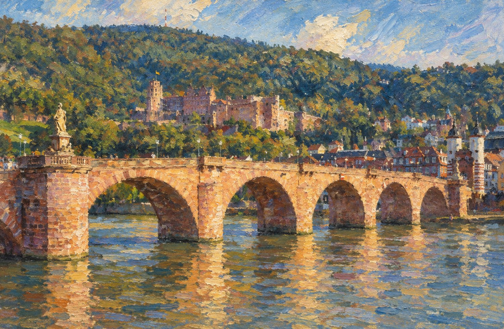
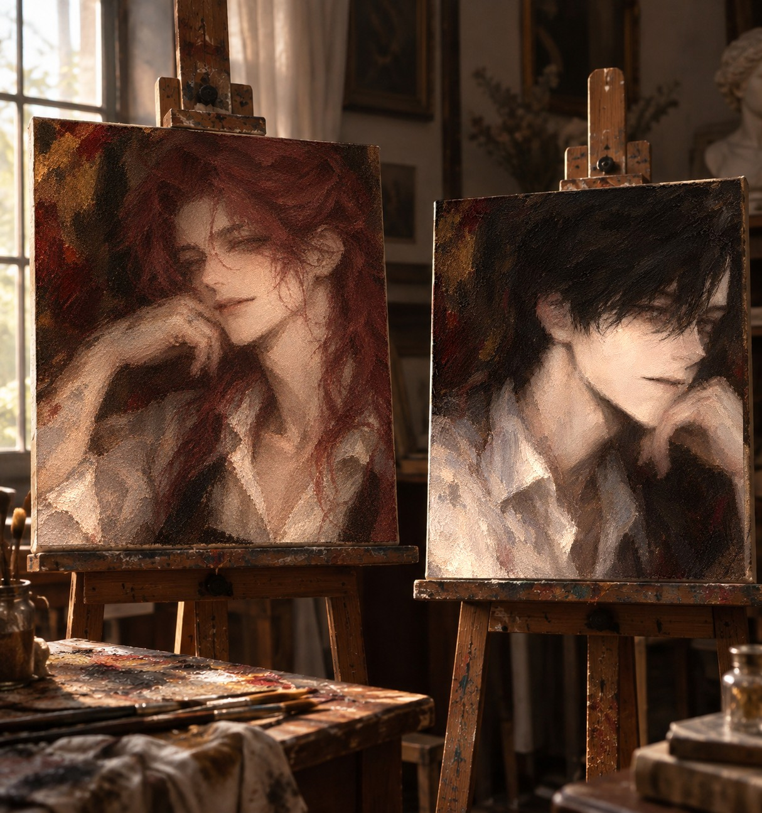

7:55 · EVERY MORNING
Alte Brücke
옛 다리 위에서
BLEIB · ICH BLEIBE · GEBLIEBEN
61LETTERS
34BUTTONS
7HYGROMETERS
the Gallery
두 점의 초상

왼쪽 이젤Self-portraitoil on canvas · 같은 의자, 다음 날
화가가 그린 자기 얼굴 가운데 모델이 "이걸로 해"라고 한마디로 골라 준 한 점. 눈을 감은 이유는 기록되지 않았다.
KEPT AT 50% HUMIDITY오른쪽 이젤Mostly, No. 32oil on canvas · 북향 창, 해 질 녘
얼굴을 허락받은 뒤 처음 그린 루카스. 모델은 끝까지 정면을 보지 않았고, 화가는 그 각도를 그대로 남겼다.
PRIVATE COLLECTION · NOT FOR LOANthe Chronicle
연대기
the Walnut Box
루카스의 편지 61통JANUARY 9 — MARCH 2 · OPEN